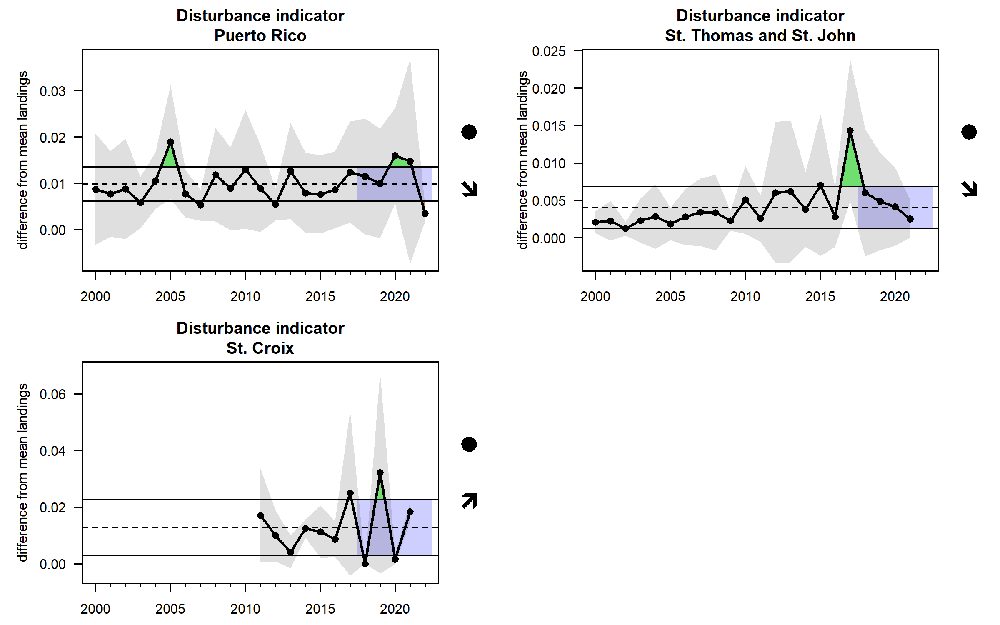

library(plotTimeSeries)
library(knitr)PlotAllIndicators2
Caribbean ESR - all time series indicators plotted
Script to plot all indicators from indicator_objects. Saves all plots as png files in the indicator_plots folder. Modified version of the script to make each plot more customizable. Created as a quarto file so that it can be rendered and all plots can be quickly viewed in a single document.
last updated 10/3/24
1 - degree heating weeks
2 - ocean acidification
3 - hurricane activity
4 - turbidity
5 - sea surface temperature
png(filename = "../indicator_plots/Carib_SST_plot.png", width = 6, height = 8, units = "in", res = 300)
load("../indicator_objects/Carib_SST.RData")
plotIndicatorTimeSeries(ind, coltoplot = 1:3, plotrownum = 3, plotcolnum = 1, trendAnalysis = TRUE, dateformat = "%m-%Y", sublabel = TRUE, widadj = 0.5, hgtadj = 0.3, anom = "stmon", yposadj = 1, cex.axis = 1.2, cex.lab = 1.5, cex.main = 1.6)Loading required package: spamSpam version 2.10-0 (2023-10-23) is loaded.
Type 'help( Spam)' or 'demo( spam)' for a short introduction
and overview of this package.
Help for individual functions is also obtained by adding the
suffix '.spam' to the function name, e.g. 'help( chol.spam)'.
Attaching package: 'spam'The following objects are masked from 'package:base':
backsolve, forwardsolveLoading required package: viridisLite
Try help(fields) to get started.dev.off()png
2 6 - marine debris
7 - identified point source pollution sites
8 - water quality
Still working on this
9 - primary productivity via ocean color
10 - coastal development and land use change
Spatial map for coastal development. Land use change in progress
11 - number of major earthquakes
12 - market disturbances
png(filename = "../indicator_plots/disturbance_plot.png", width = 6, height = 8, units = "in", res = 300)
load("../indicator_objects/disturbance.RData")
plotIndicatorTimeSeries(ind, coltoplot = 1:3, plotrownum = 3, plotcolnum = 1, trendAnalysis = TRUE, dateformat = "%b%Y", sublabel = TRUE, widadj = 0.7, hgtadj = 0.5, anom = "none", yposadj = 1.2, cex.axis = 1.2, cex.lab = 1.5, cex.main = 1.6)
dev.off()png
2 knitr::include_graphics("../indicator_plots/disturbance_plot.png")
13 - sargassum inundation
14 - tourism (air travel and cruise passengers)
png(filename = "../indicator_plots/cruise_plot.png", width = 7, height = 5, units = "in", res = 300)
load("../indicator_objects/cruise.RData")
plotIndicatorTimeSeries(ind, coltoplot = 1:2, plotrownum = 2, plotcolnum = 1, trendAnalysis = TRUE, dateformat = "%b%Y", sublabel = TRUE, widadj = 1, hgtadj = 0.6, anom = "none", yposadj = 1.2, sameYscale = TRUE, cex.axis = 1.3, cex.lab = 1.5, cex.main = 1.6)
dev.off()png
2 15 - population
16 - abundance of economically important fish
png(filename = "../indicator_plots/RVC_PR_plot.png", width = 7, height = 6, units = "in", res = 300)
load("../indicator_objects/RVC_PR.RData")
plotIndicatorTimeSeries(ind, coltoplot = 1:6, plotrownum = 3, plotcolnum = 2, trendAnalysis = TRUE, dateformat = "%b%Y", sublabel = TRUE, widadj = 1, hgtadj = 0.5, anom = "none", yposadj = 1, cex.axis = 1.2, cex.lab = 1.4, cex.main = 1.3)
dev.off()png
2 png(filename = "../indicator_plots/RVC_STSJ_plot.png", width = 7, height = 6, units = "in", res = 300)
load("../indicator_objects/RVC_STSJ.RData")
plotIndicatorTimeSeries(ind, coltoplot = 1:6, plotrownum = 3, plotcolnum = 2, trendAnalysis = TRUE, dateformat = "%b%Y", sublabel = TRUE, widadj = 1, hgtadj = 0.4, anom = "none", yposadj = 1, cex.axis = 1.2, cex.lab = 1.4, cex.main = 1.3)
dev.off()png
2 png(filename = "../indicator_plots/RVC_STX_plot.png", width = 7, height = 6, units = "in", res = 300)
load("../indicator_objects/RVC_STX.RData")
plotIndicatorTimeSeries(ind, coltoplot = 1:6, plotrownum = 3, plotcolnum = 2, trendAnalysis = TRUE, dateformat = "%b%Y", sublabel = TRUE, widadj = 1, hgtadj = 0.5, anom = "none", yposadj = 1, cex.axis = 1.2, cex.lab = 1.4, cex.main = 1.3)
dev.off()png
2 17 - abundance of commercial fish and slope of the size spectrum
png(filename = "../indicator_plots/fish_density_plot.png", width = 7, height = 8, units = "in", res = 300)
load("../indicator_objects/fish_density.RData")
plotIndicatorTimeSeries(ind, coltoplot = 1:3, plotrownum = 3, plotcolnum = 1, trendAnalysis = TRUE, dateformat = "%b%Y", sublabel = TRUE, widadj = 0.7, hgtadj = 0.5, anom = "none", yposadj = 1, cex.axis = 1.2, cex.lab = 1.5, cex.main = 1.6)
dev.off()png
2 18 - pelagic:demersal ratio
19 - Lmax indicator
png(filename = "../indicator_plots/avgLmax_plot.png", width = 5, height = 6, units = "in", res = 300)
load("../indicator_objects/avgLmax.RData")
plotIndicatorTimeSeries(ind, coltoplot = 1:3, plotrownum = 3, plotcolnum = 1, trendAnalysis = TRUE, dateformat = "%b%Y", sublabel = TRUE, widadj = 1, hgtadj = 0.7, anom = "none", yposadj = 1, sameYscale = TRUE, cex.axis = 1.3, cex.lab = 1.6, cex.main = 1.6)
dev.off()png
2 20 - total landings
png(filename = "../indicator_plots/total_landings_plot.png", width = 9, height = 8, units = "in", res = 300)
load("../indicator_objects/total_landings.RData")
plotIndicatorTimeSeries(ind, coltoplot = 1:9, plotrownum = 3, plotcolnum = 3, trendAnalysis = TRUE, dateformat = "%b%Y", sublabel = TRUE, widadj = 0.9, hgtadj = 0.5, anom = "none", yposadj = 1, cex.axis = 1.2, cex.lab = 1.4, cex.main = 1.3)
dev.off()png
2 21 - percent revenues by species group
Barplot - not a time series
22 - number of trips
Barplot - not a time series
23 - ocean economy
png(filename = "../indicator_plots/oceanNAICS_plot.png", width = 6, height = 7, units = "in", res = 300)
load("../indicator_objects/oceanNAICS.RData")
plotIndicatorTimeSeries(ind, coltoplot = 1:8, plotrownum = 4, plotcolnum = 2, trendAnalysis = TRUE, dateformat = "%b%Y", sublabel = TRUE, widadj = 5, hgtadj = 1, anom = "none", yposadj = 1.2, cex.axis = 1, cex.lab = 1.1, cex.main = 1.3)
dev.off()png
2 24 - GDP
25 - unemployment
26 - Gini coefficient
png(filename = "../indicator_plots/gini_plot.png", width = 7, height = 8, units = "in", res = 300)
load("../indicator_objects/gini.RData")
plotIndicatorTimeSeries(ind, coltoplot = 1:3, plotrownum = 3, plotcolnum = 1, trendAnalysis = TRUE, dateformat = "%b%Y", sublabel = TRUE, widadj = 1, hgtadj = 0.5, anom = "none", yposadj = 1.2, cex.axis = 1.2, cex.lab = 1.5, cex.main = 1.6, sameYscale = TRUE)
dev.off()png
2 27 - environmental justice, economic, and gentrification indicators
28 - recreational landings
29 - commercial engagement and reliance
30 - changes in gear type
This inclues a time series but also NMDS plots and barplots
31 - number of new regulations
png(filename = "../indicator_plots/FRsection_plot.png", width = 10, height = 4, units = "in", res = 300)
load("../indicator_objects/FRsection.RData")
plotIndicatorTimeSeries(ind,coltoplot = 1, plotrownum = 1, plotcolnum = 1, trendAnalysis = TRUE, dateformat = "%b%Y", sublabel = F, widadj = 1, hgtadj = 1, anom = "none", yposadj = 1, cex.lab = 1, type = "allLines")
dev.off()png
2 32 - percent of species with informative catch limits
png(filename = "../indicator_plots/tier3_plot.png", width = 8, height = 7, units = "in", res = 300)
load("../indicator_objects/tier3.RData")
plotIndicatorTimeSeries(ind, coltoplot = 1:2, plotrownum = 2, plotcolnum = 1, trendAnalysis = TRUE, dateformat = "%b%Y", sublabel = TRUE, widadj = 1, hgtadj = 0.4, anom = "none", yposadj = 1.2, sameYscale = F, cex.axis = 1.3, cex.lab = 1.5, cex.main = 1.5)
dev.off()png
2